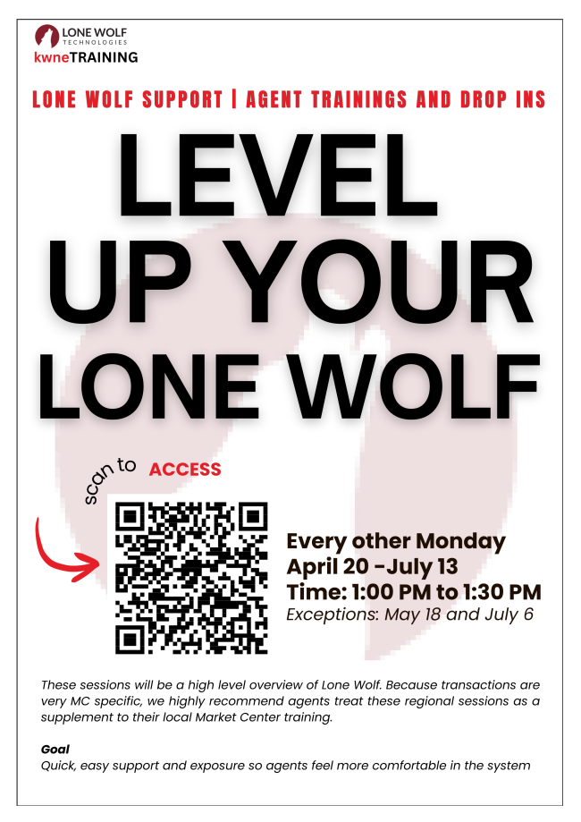

Transition Update
DocuSign Rooms to Lone Wolf Transact
DocuSign Rooms is scheduled to discontinue on July 14, 2026. Lone Wolf Transact will become the next place to manage this workflow, so this page gathers the most useful KW Answers links and training registration in one spot.
Agent Training
Lone Wolf support classes and drop-ins

April 20 through July 13
Sessions run from 1:00 PM to 1:30 PM. Exceptions listed on the flyer are May 18 and July 6.
These regional sessions are a high-level overview of Lone Wolf. Because transactions are Market Center specific, use these as a supplement to local Market Center training.
KW Answers
Helpful Lone Wolf Transact articles
Start here if an agent needs to connect Lone Wolf Transact inside Command.
Opportunities Create a Lone Wolf Transaction from an OpportunityUse this when starting a new transaction from Command.
Workflow Lone Wolf Transact and Command WorkflowReview how Command and Lone Wolf Transact work together through the transaction process.
Access Access the Lone Wolf Transaction Linked to an OpportunityFind an existing linked Lone Wolf transaction from the related Command Opportunity.
Next Steps
What agents can do during the soft rollout
- Register for a regional class.Use the Zoom link above and attend a session when your schedule allows.
- Connect Lone Wolf Transact in Command.Use the KW Answers setup article before you need to create a new transaction.
- Start new opportunities in Lone Wolf Transact.For new files, begin getting comfortable with the Lone Wolf workflow now.
- Back up DocuSign Rooms documents.Save any signed forms or documents you need before DocuSign Rooms is discontinued on July 14, 2026.